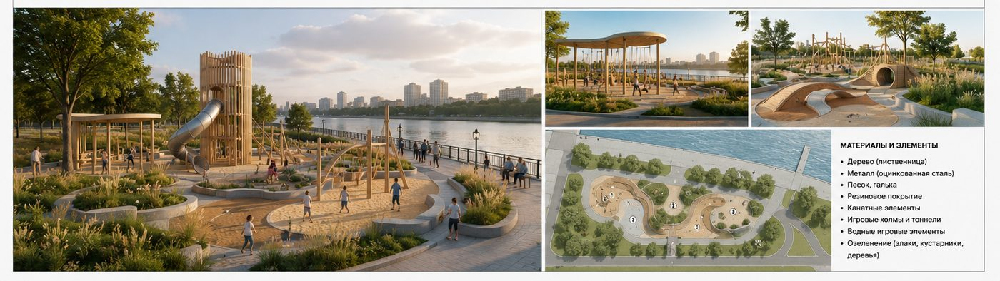
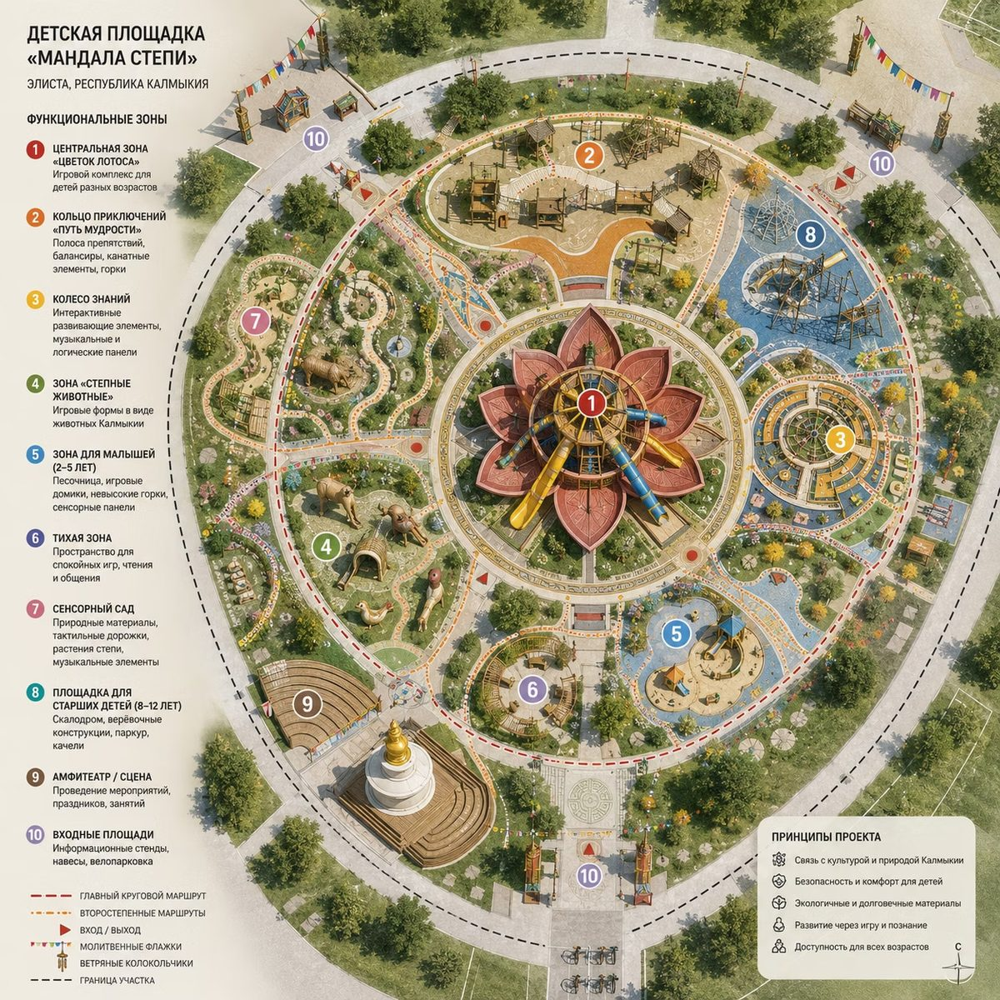
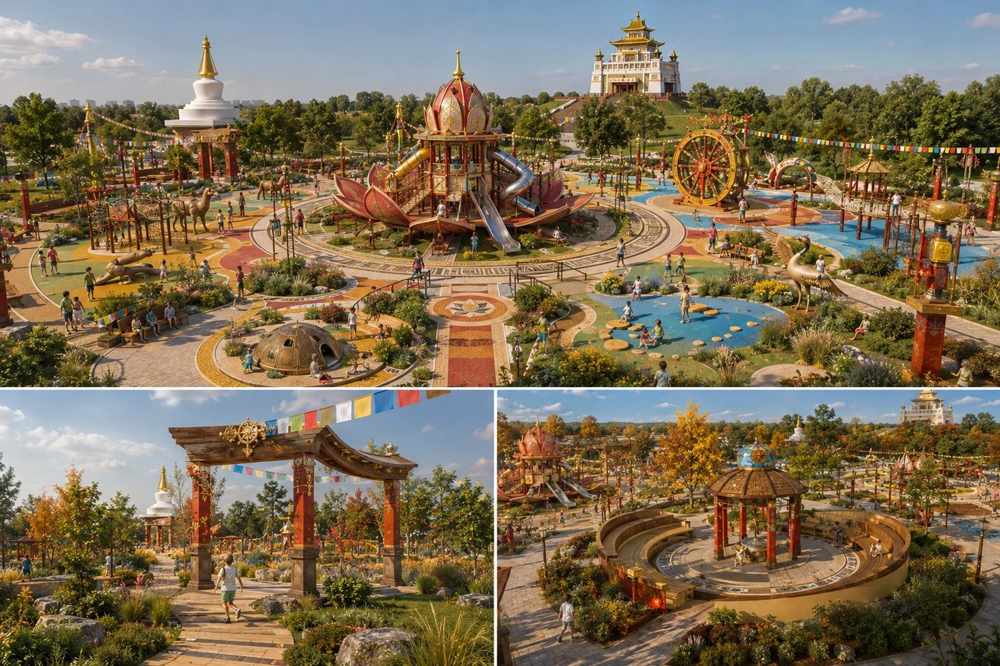

Структура модуля
1
Промтинг для визуализации
Принципы составления запросов для генеративных моделей: описание объекта, стиля, освещения, ракурса, материалов.
2
Подготовка драфта в Photoshop
Сборка исходника для нейросети: скетч композиции, коллаж из референсов, маски зон контроля, корректная перспектива.
3
Отбор и доработка драфта
Выбор наиболее удачного варианта, повторная генерация деталей, работа с masking и inpainting при необходимости.
4
Постобработка в Photoshop
Цветокоррекция, ретушь, добавление контекста (люди, окружение, растительность), финальная компоновка изображения.
Принципы хорошего промта для визуализации
✓
Чёткое описание типа объекта и архитектурного стиля✓
Указание ракурса и масштаба (вид с улицы, аэросъёмка, интерьер)✓
Описание материалов и текстур (бетон, дерево, стекло, металл)✓
Условия освещения и время суток✓
Референсные стили или известные архитектурные аналоги✓
Негативные промты — что нужно исключить из результата
📋 Пример промта для визуализации
Современный жилой дом, минималистичная архитектура, фасад из бетона и дерева,
большие панорамные окна, вид с улицы в вечернее время, тёплое освещение окон,
ландшафтное озеленение на переднем плане, фотореалистичный рендер,
--no искажённые пропорции, лишние объекты на фасаде
06
Промтинг для архитектора — основы и практика
Что такое нейросеть?
Нейросеть — это инструмент, который помогает ускорить работу архитектора. Она не заменяет специалиста и не принимает решения за него. Может ошибаться, придумывать факты и не знает всех строительных норм. Любой результат нужно проверять.
Лучше всего нейросети помогают:
✓
Искать идеи✓
Создавать первые концепции✓
Подбирать референсы✓
Делать черновые визуализации✓
Писать и редактировать тексты✓
Автоматизировать рутинные задачи
Основные виды нейросетей
📝
Для работы с текстом
Поиск идей, описания проектов, анализ документов, составление ТЗ.
Примеры: ChatGPT, Claude, Gemini
🎨
Для генерации изображений
Концепции, референсы, эскизы и визуализации.
Примеры: ChatGPT, Midjourney, Flux, Stable Diffusion, Visoid
🏗️
Для создания 3D-моделей
Быстрая концептуальная модель по тексту или изображению.
Примеры: Tripo AI, Meshy AI, Rodin
📊
Для создания презентаций
Автоматически оформляют презентации, структуру и тексты.
Примеры: Gamma, Canva AI, Beautiful.ai, Tome
Где архитектор может использовать нейросети?
🎯
Концептуальные визуализации
📐
Схемы, диаграммы и иконки
📄
Написание пояснительных записок
📋
Анализ документов и нормативной базы
Промпт — это запрос или инструкция, которую мы пишем нейросети. Чем лучше написан промпт — тем лучше получится результат.
Формула хорошего промпта: РОЛЬ + КОНТЕКСТ + ЗАДАЧА + ПРИМЕРЫ + ФОРМАТ + ТОН
1
Роль
Кем должна быть нейросеть?
Например: архитектор, урбанист, дизайнер интерьера.
2
Контекст
Что происходит? Над каким проектом работаете, какие ограничения, для кого.
3
Задача
Что именно нужно сделать?
Придумать концепцию, написать текст, проанализировать документ, создать визуализацию.
4
Примеры
Покажите образец или опишите, на что ориентироваться.
5
Формат
Как должен выглядеть ответ?
Список, таблица, текст, презентация.
6
Тон
Какой стиль ответа нужен?
Официальный, простой, научный, дружелюбный.
Пример промпта по формуле — детская площадка на набережной
Тема: концепция детской площадки на набережной в Ростове-на-Дону
| Роль |
Контекст |
Задача |
Примеры |
Формат |
Тон |
| Ты — архитектор и ландшафтный дизайнер с опытом создания общественных пространств и детских площадок. |
Ростов-на-Дону, набережная реки Дон. Тёплый климат, много солнечных дней. Локация — активная городская зона. Рядом вода, зелёные зоны и велодорожка. Площадка для детей разного возраста (2–12 лет). |
Разработай концепцию детской площадки на набережной в Ростове-на-Дону. Предложи идею, которую можно связать с характером города и рекой Дон. Опиши основные зоны и сценарии использования, подбери материалы и элементы благоустройства. |
— Современные природные площадки с деревом и водой
— Волнообразные формы и плавные линии
— Использование местных материалов (дерево, металл, песок)
— Интеграция с набережной и видами на реку |
1. Общая концепция
2. Функциональные зоны
3. Визуализация (2–3 изображения)
4. Генеральный план
5. Список материалов |
Профессиональный, креативный, но понятный заказчику. Акцент на комфорт детей, безопасность, экологичность и связь с местом. |
📋 Полный промпт (пример запроса)
Ты — архитектор и ландшафтный дизайнер с опытом создания общественных пространств и детских площадок. Контекст: Ростов-на-Дону, набережная реки Дон. Тёплый климат, много солнечных дней. Локация — активная городская зона с прогулочным потоком людей. Рядом вода, зелёные зоны и велодорожка. Площадка для детей разного возраста (2–12 лет).
Задача: разработай концепцию детской площадки на набережной в Ростове-на-Дону. Предложи идею, которую можно связать с характером города и рекой Дон. Опиши основные зоны и сценарии использования, подбери материалы и элементы благоустройства. Предложи визуальный образ площадки.
Примеры для ориентира: современные природные площадки с деревом и водой, волнообразные формы и плавные линии, использование местных материалов (дерево, металл, песок), интеграция с набережной и видами на реку.
Формат результата: 1) общая концепция площадки; 2) функциональные зоны и сценарии использования; 3) визуализация площадки (2–3 изображения с разных ракурсов); 4) генеральный план; 5) список материалов и элементов.
Тон: профессиональный, креативный, но понятный заказчику. С акцентом на комфорт детей, безопасность, экологичность и связь с местом.

Так выглядит результат по этому промпту: рендеры с разных ракурсов, генплан и список материалов — всё получено из формулы выше.
Задание
Используя пример, составить промпт для создания:
2
Генерального плана проекта
3
2–3 визуализаций проекта
Материалы, подготовленные на основе заданных промптов, будут использованы в финальной презентации.
Пример задания: детская площадка в Элисте
РОЛЬ
Ты — архитектор и ландшафтный дизайнер с опытом создания общественных пространств и детских площадок.
КОНТЕКСТ
Элиста, Республика Калмыкия. Континентальный климат: жаркое сухое лето, холодная зима, много солнечных дней. Локация — центральная городская зона, либо парк рядом с буддийским храмом (хурулом). Площадка для детей разного возраста (2–12 лет). Важно отразить культурный код региона и буддийскую эстетику.
ЗАДАЧА
Разработай концепцию детской площадки в буддийском стиле для города Элиста. Предложи идею, которая связывает игровое пространство с калмыцкой культурой и буддийскими символами. Опиши основные зоны и сценарии использования, подбери материалы и элементы благоустройства. Предложи визуальный образ площадки.
ПРИМЕРЫ ДЛЯ ОРИЕНТИРА
✓
Использование мандалы в планировке✓
Элементы буддийской символики (лотос, колесо Дхармы, ступы) в игровых формах✓
Калмыцкий орнамент в мощении и малых формах✓
Дерево, камень, природные материалы✓
Молитвенные флажки и ветряные колокольчики как часть среды✓
Зоны для тихих игр и медитации✓
Цветовая гамма: красный, жёлтый, синий, белый
ФОРМАТ РЕЗУЛЬТАТА
Общая концепция площадки (описание идеи и культурной отсылки).
ТОН
Профессиональный, креативный, культурно-чувствительный. С акцентом на безопасность детей, экологичность, аутентичность и связь с буддийской традицией Калмыкии.
Как из этого промпта получить генплан?
В пункте «Формат результата» отдельно пропишите генплан — и дополните запрос нужными подробностями (масштаб, экспликация зон, легенда).

Детская площадка «Мандала степи», Элиста — генплан с 10 функциональными зонами и легендой, полученный из промпта выше.
Как из этого промпта получить визуализации?
Так же — пропишите визуализации в «Формате результата» и дополните запрос нужными подробностями (ракурс, время суток, количество людей в кадре).

Визуализации той же площадки с разных ракурсов — общий план, входная группа, амфитеатр.
Основные ошибки в промтинге
✗ Слишком короткий запрос
«Сделай презентацию.» — нейросеть не знает ни темы, ни стиля, ни аудитории.
✗ Нет контекста
Нейросеть не знает, над каким проектом вы работаете.
✗ Ожидание идеального результата с первого раза
Работа с нейросетью — это диалог и несколько итераций.
✗ Полное доверие нейросети
Всегда проверяйте факты, нормативы и выводы.
💡
Главное правило: Нейросеть не умеет читать мысли. Чем подробнее и понятнее вы объясните задачу, тем качественнее получите результат.
Photoshop до генерации — подготовка драфта для нейросети
Photoshop работает не только после генерации: качественный исходник, собранный вручную, значительно повышает точность и управляемость результата на выходе из нейросети.
✏️
Скетч-основа композиции
Быстрый набросок объёмов и расположения объекта на участке — задаёт нейросети правильную геометрию и пропорции сцены.
🖼️
Коллаж из референсов
Совмещение нескольких изображений-аналогов в один драфт — материалы, формы, окружение собираются в единую отправную точку.
🎭
Маски для зон контроля
Выделение областей, которые нейросеть должна изменить или, наоборот, сохранить без изменений — основа для inpainting.
📐
Корректная перспектива
Выравнивание линий и горизонта на исходнике — нейросеть точнее держит перспективу, если она задана корректно изначально.
✓
Чёрно-белый или плоско закрашенный драфт уже задаёт силуэт и масштаб будущего здания✓
Грубая тоновая подкладка (light/shadow map) помогает нейросети выбрать верное освещение сцены✓
Контекст участка (соседние здания, дорога, зелень) на драфте удерживает масштаб и не даёт сцене «потеряться»✓
Чистый альфа-канал вокруг объекта упрощает дальнейшую замену фона при генерации
Postprocessing — на что обратить внимание в Photoshop
🎨
Цветокоррекция
Баланс белого, контраст, насыщенность — приведение изображения к единому визуальному стилю.
🧹
Устранение артефактов
Исправление характерных ошибок генерации: искажённой геометрии, лишних деталей, швов.
🌳
Добавление контекста
Вставка людей, машин, растительности для повышения реалистичности сцены.
✨
Финальная ретушь
Резкость, виньетирование, итоговая компоновка для презентации проекта.
Материалы занятия по Photoshop
Референсы и примеры работ с занятия доступны по ссылке:
На этом занятии мы разобрали полный рабочий процесс от создания документа до финального экспорта:
✓
Создали новый документ (Файл → Создать) с нужными размерами✓
Познакомились со слоями — загружали фото, меняли порядок слоёв, группировали их✓
Вырезали объекты с помощью быстрого выделения и прямолинейного лассо✓
Трансформировали элементы — масштабировали и поворачивали через Ctrl+T✓
Собирали коллаж: фон, архитектура, детали (люди, деревья) на отдельных слоях✓
Корректировали цвет и тональность через корректирующие слои (Цветовой тон, Насыщенность, Кривые)✓
Добавляли тени и свет (применяли эффекты шума и движения)✓
Работали с текстом — редактировали параметры шрифта, загружали новый шрифт✓
Запомнили важные правила: как сохранять .psd и экспортировать в JPG
💡
Результат работы этого модуля — готовое визуализированное изображение — становится исходным материалом для Модуля 4, где собирается итоговая презентация проекта.